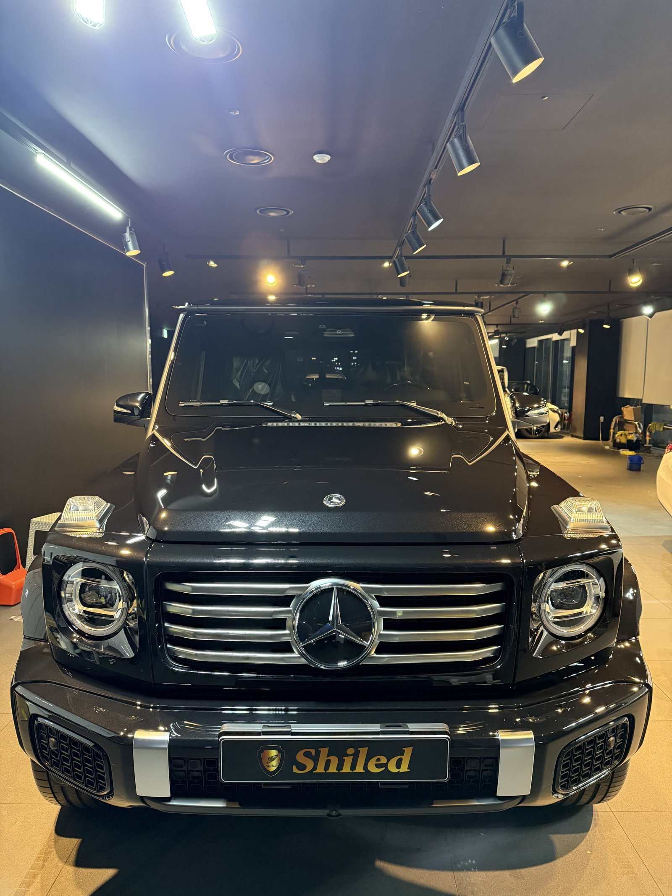
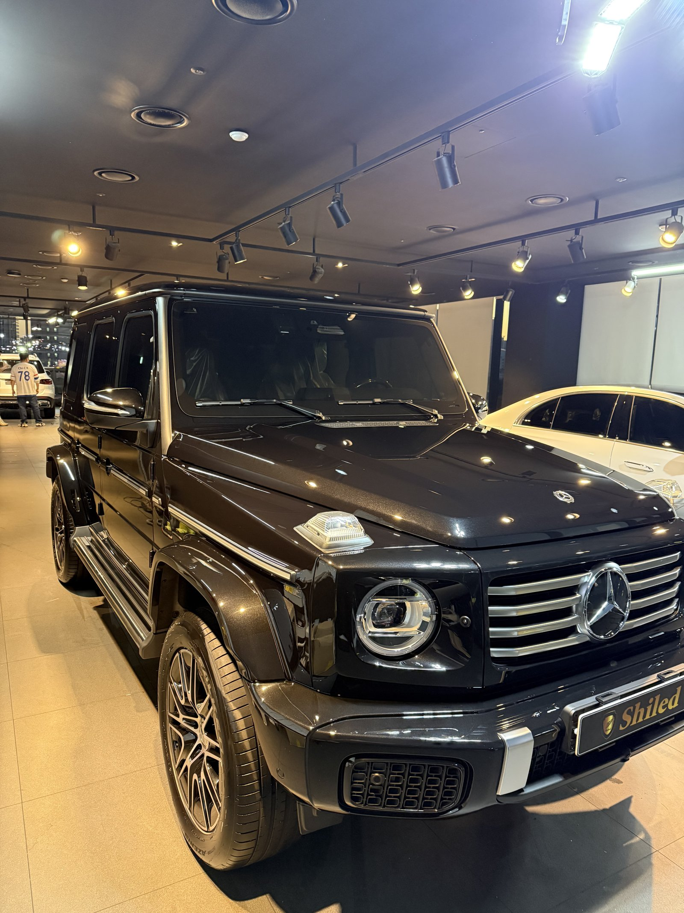
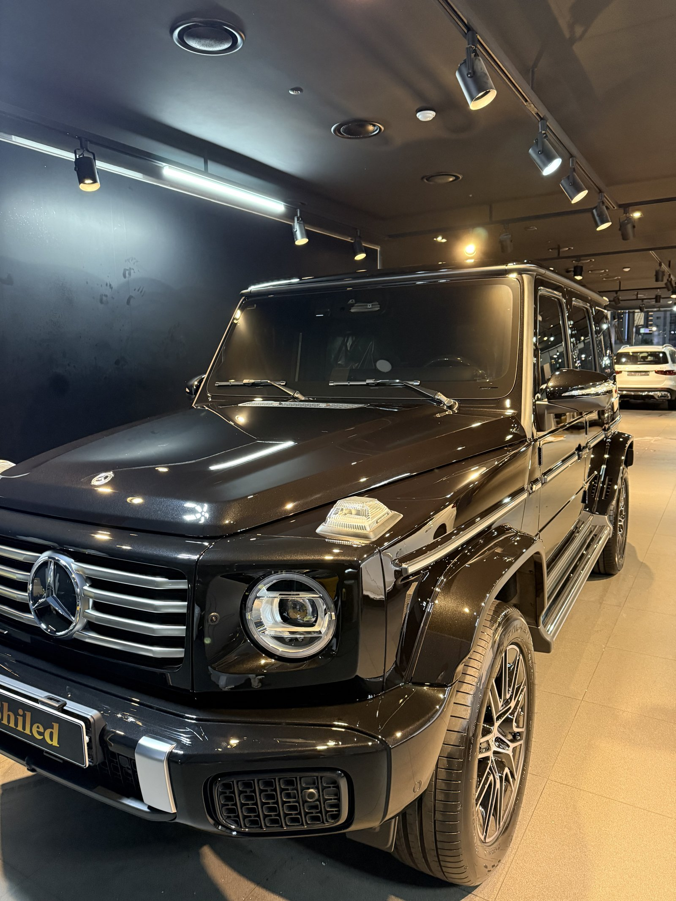
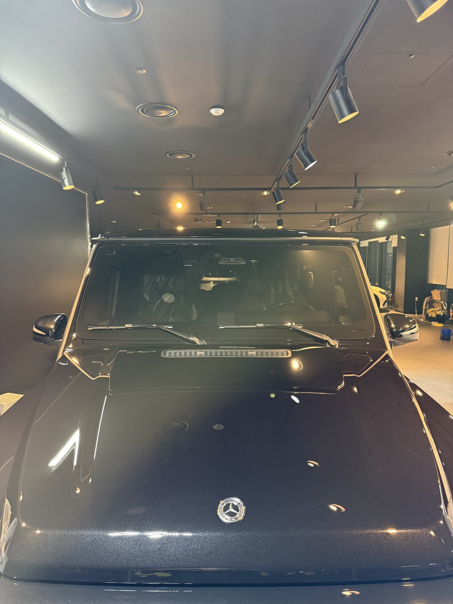
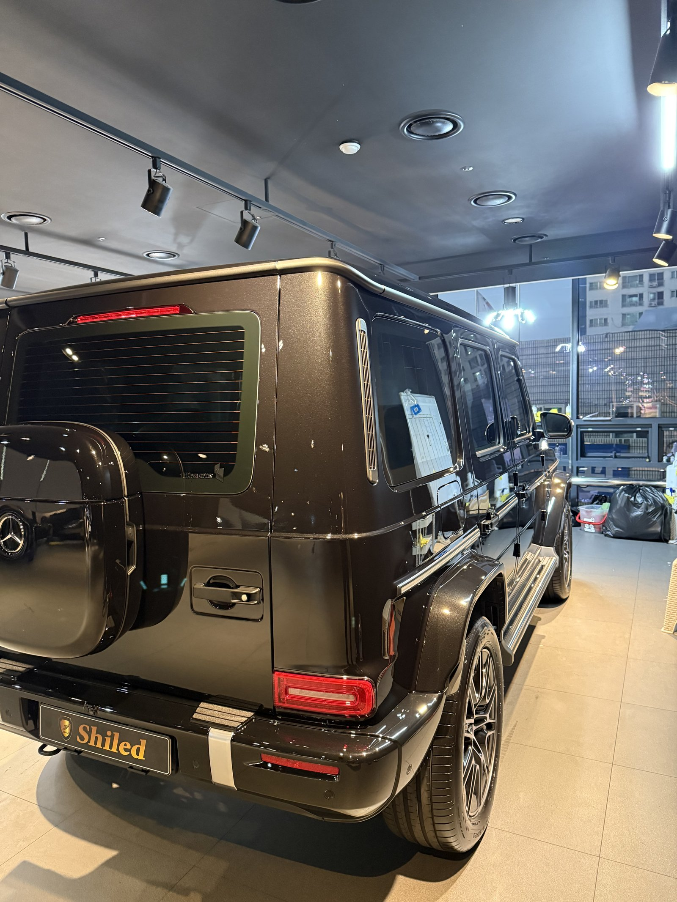
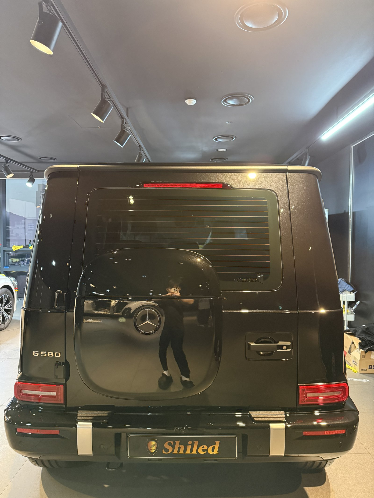
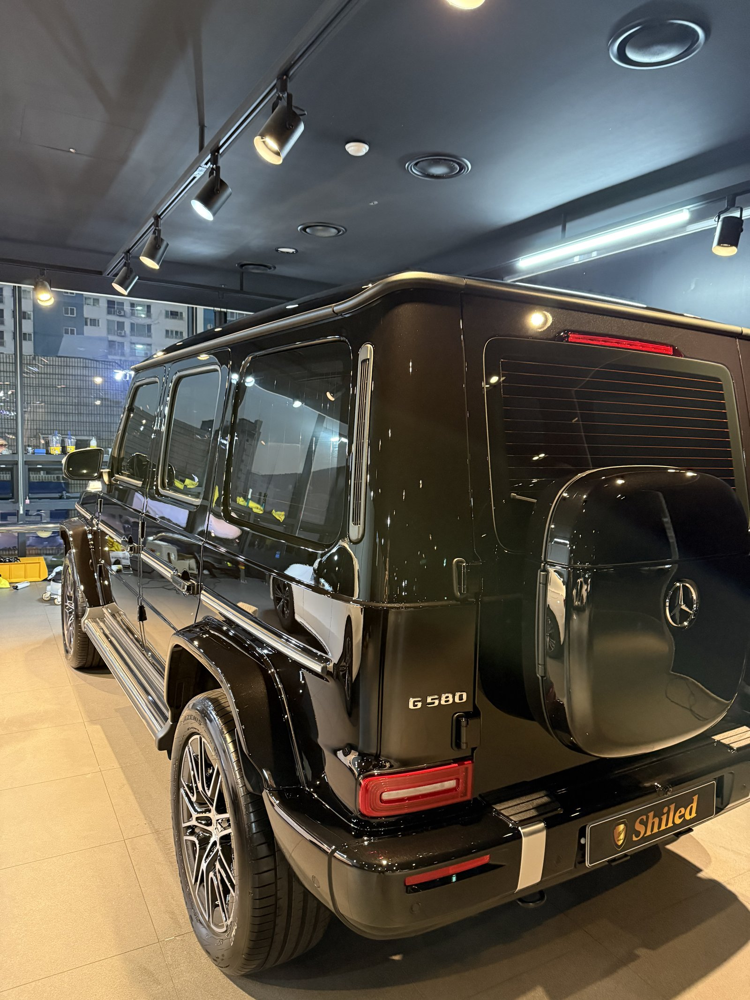
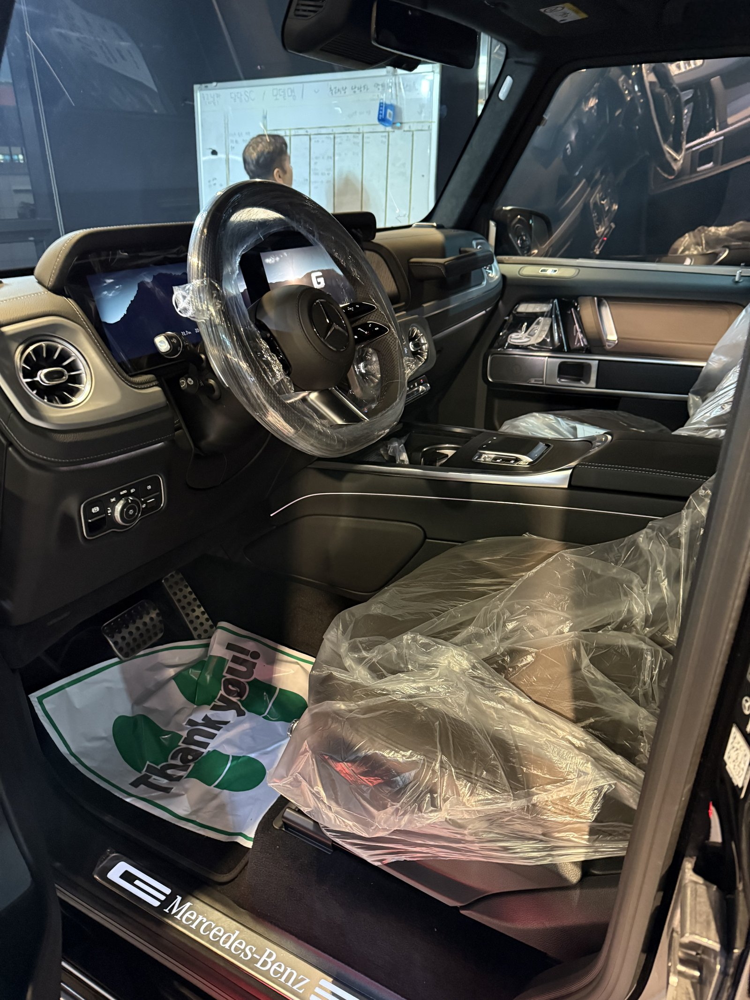
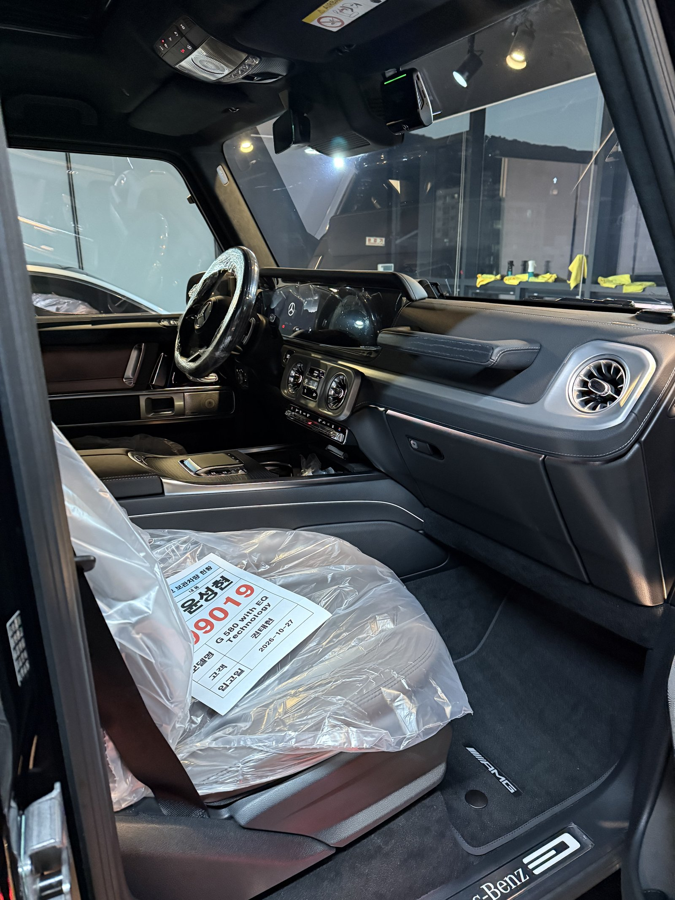
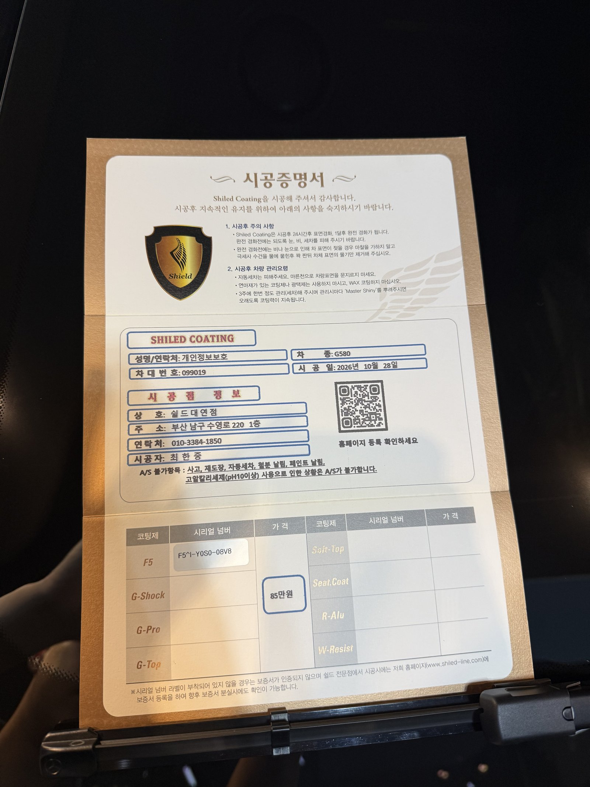

벤츠 G580, 전기 G클래스 검정 신차입니다.
겉모습은 익숙한 G클래스지만 엔진 대신 모터로 달리는 차입니다.
출고 전 F5로 진행한 부산 유리막코팅 기록입니다.

각진 G클래스는 어디가 까다롭나요?
면과 면이 꺾이는 모서리마다 코팅제가 고이기 쉽습니다.
보닛 양옆 방향지시등 받침과 펜더 위 모서리가 대표적입니다.
평평한 면이 넓은 대신 꺾이는 선이 많아서 선을 따라 닦아야 합니다.
검정이라 천장 조명이 각 면에 따로따로 맺혀 점검이 수월했습니다.



뒤 도어 박스 커버도 코팅하나요?
네, 차체와 같은 도장면이라 함께 올렸습니다.
G580은 뒤 도어에 사각 박스 커버가 달려 있습니다.
세로 면이 넓어 빗물 자국이 흘러내린 모양 그대로 남기 쉬운 자리입니다.
커버 테두리와 뒤 도어 경계를 따라 마무리했습니다.



기술자의 팁
전기차는 충전구 덮개를 자주 여닫습니다. 손이 닿는 덮개 둘레는 손때가 쌓이기 쉬우니 세차할 때 한 번 더 닦아 주십시오. 충전구 안쪽에는 고압수를 직접 쏘지 마십시오.
검정 G580에 F5를 올린 이유
F5는 색감의 깊이와 글로시함에 특화된 코팅입니다.
넓은 평면이 많은 G클래스는 검정의 깊이가 면 전체로 드러납니다.
실내는 블랙 톤에 원형 송풍구와 넓은 디스플레이가 들어간 구성입니다.
코팅제는 대표가 직접 개발·제조한 제품입니다.
이번 부산 유리막코팅은 F5 싱글로 진행했습니다.


시공증명서도 함께 드립니다
모든 시공 차량에 시공증명서를 드립니다.
차종·시공일·코팅제 시리얼 번호가 적혀 있고, 홈페이지에 등록해 보증을 받으실 수 있습니다.

차종·시공일·코팅제 시리얼이 기재된 시공증명서
자주 묻는 질문
Q. 전기차도 유리막코팅 방법이 같나요?
A. 도장면에 올리는 코팅제와 공정은 같습니다. 충전구 덮개 둘레처럼 손이 자주 닿는 자리를 관리 포인트로 안내해 드립니다.
Q. 전기차 충전구 주변은 세차할 때 어떻게 하나요?
A. 덮개를 닫은 상태에서 둘레만 닦아 주십시오. 충전구 안쪽에 고압수를 직접 쏘는 것은 피하셔야 합니다.
Q. G클래스는 코팅이 더 까다롭나요?
A. 면이 꺾이는 모서리가 많아 잔여물 확인할 자리가 많습니다. 선을 따라 닦아내는 시간이 더 걸립니다.
Q. 검정 차에 F5를 많이 하는 이유는요?
A. F5는 색감의 깊이에 특화된 코팅이라 검정의 깊은 광을 살리는 데 잘 맞습니다.
Q. 쉴드광택 위치와 예약은 어떻게 하나요?
A. 부산 남구 유엔로220 1F 쉴드광택입니다. 예약·상담은 010-3384-1850, 대표 최한중이 직접 상담하고 책임 시공합니다.
새 차일수록 시작점이 다릅니다. 가장 깨끗할 때 입혀두십시오.
제품을 직접 만드는 사람이 직접 시공합니다.
부산에서 신차 유리막코팅을 고민 중이시면 편하게 연락 주십시오.
어떤 차를 타냐보다 어떻게 타냐가 중요합니다~!
시공 중에는 전화를 받지 못할 때가 많습니다.
카카오톡으로 차종과 원하시는 시공을 남겨주시면 확인 후 답변드립니다.
쉴드광택 · 부산 남구 유엔로220 1F · 대표 최한중